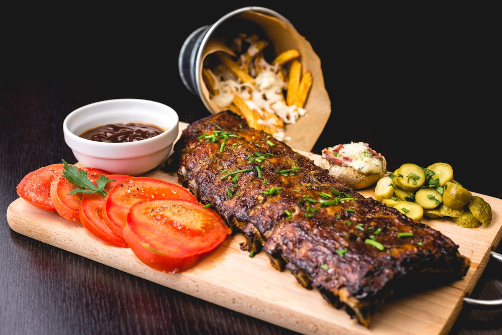
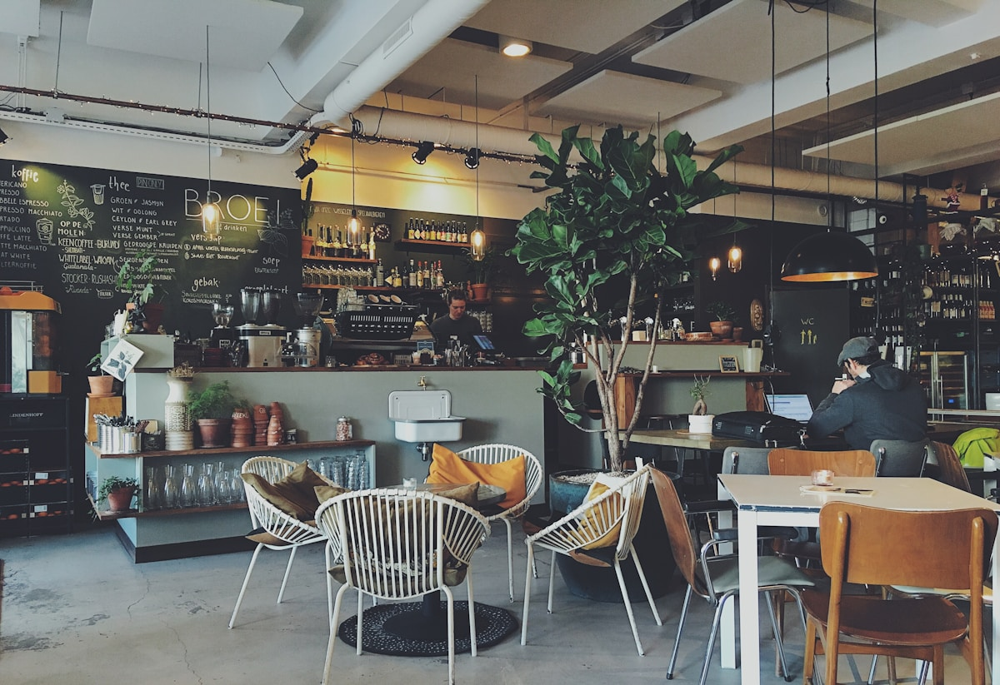
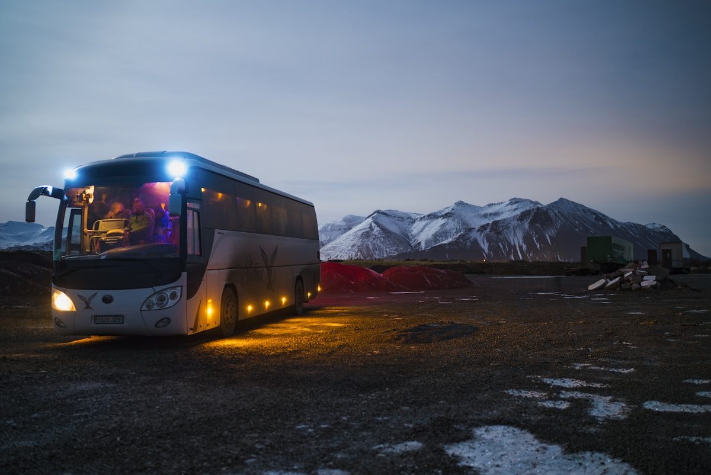

REAL-TIME STATUS
지금 갈 수 있는 곳을
먼저 보여줍니다.
실시간 영업 여부와 대기 팀, 예상 시간을 한눈에 비교해 여행자의 판단 시간을 줄입니다.
02 / DIGITAL SERVICE
SERVICE PROJECT MOBILE WEB SERVICE · 2026
웨이팅과 갑작스러운 휴무에도
여행의 다음 선택을 바로 제안하는 부산 실시간 여행 가이드
오늘 일몰 18:42 · 골든아워
현재 428곳 즉시 이용 가능

대체 Plan B
20분 내 입장 가능한 장소 찾기
PROJECT OVERVIEW
여행지의 긴 웨이팅이나 임시 휴무로 일정이 멈추는 순간을 해결하기 위한 모바일 웹 서비스입니다. 날씨·일몰·영업 상태·대기 정보를 한 화면에서 확인하고, 이용이 어려운 장소에는 가까운 대체 장소인 ‘Plan B’를 제안합니다.
검색 정보와 실제 현장 상황의 차이로 생기는 여행자의 대기 시간과 헛걸음을 줄입니다.
실시간 영업·웨이팅 정보와 AI 입장 골든타임, 주변 대체 장소를 하나의 흐름으로 연결합니다.
날씨와 일몰부터 맛집·카페·야경 명소까지, 현재 위치를 기준으로 지금 갈 수 있는 장소를 탐색합니다.
모바일 웹 프로토타입 · 실시간 여행 정보 UI · AI Plan B 추천 경험
CORE FEATURES
REAL-TIME STATUS
실시간 영업 여부와 대기 팀, 예상 시간을 한눈에 비교해 여행자의 판단 시간을 줄입니다.
AI PLAN B
대기가 길거나 휴무인 장소에는 가까운 대체 맛집과 카페를 즉시 연결합니다.
LOCAL CONTEXT
현재 날씨, 일몰 골든아워와 이동 거리를 함께 제공해 지금 가장 좋은 경험을 찾습니다.
SERVICE SCENES
카페, 로컬 맛집, 액티비티를 실시간 상태와 함께 탐색하고 저장하거나 길찾기로 이어갈 수 있습니다.

실시간 영업 중 · 도보 4분
대기 현황과 원격 줄서기 안내

실시간 운행 및 잔여석 확인